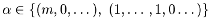

| Do any maximally inflected curves exist? |
|

| Ramification is simple if  | |
|
Theorem. [Real Schubert Calculus]
(S.-)
When all ramification is simple, there exists a choice of real ramification points for which all linear series are real.
Conjecture. (Shapiro-Shapiro)
Theorem. (Gabrielov-Eremenko)
|